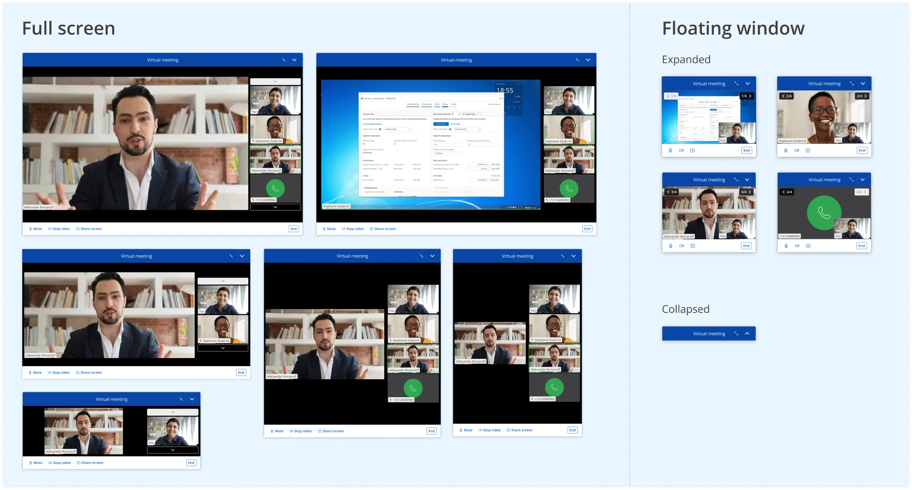
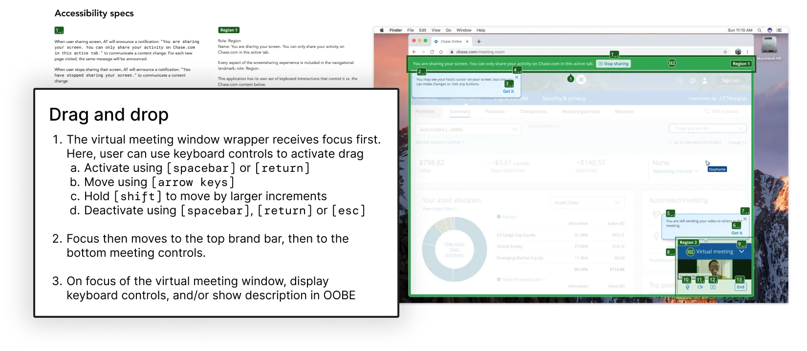
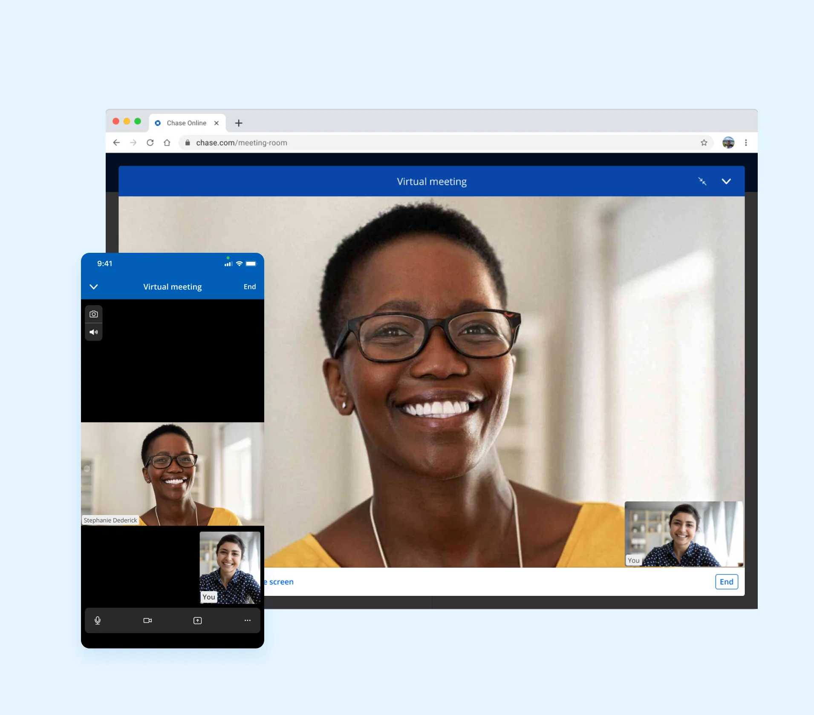
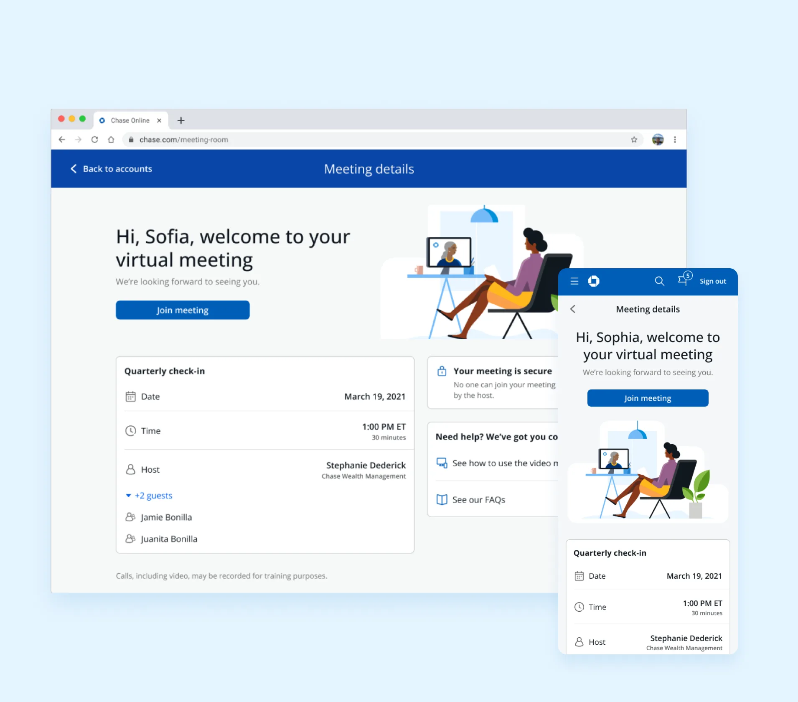
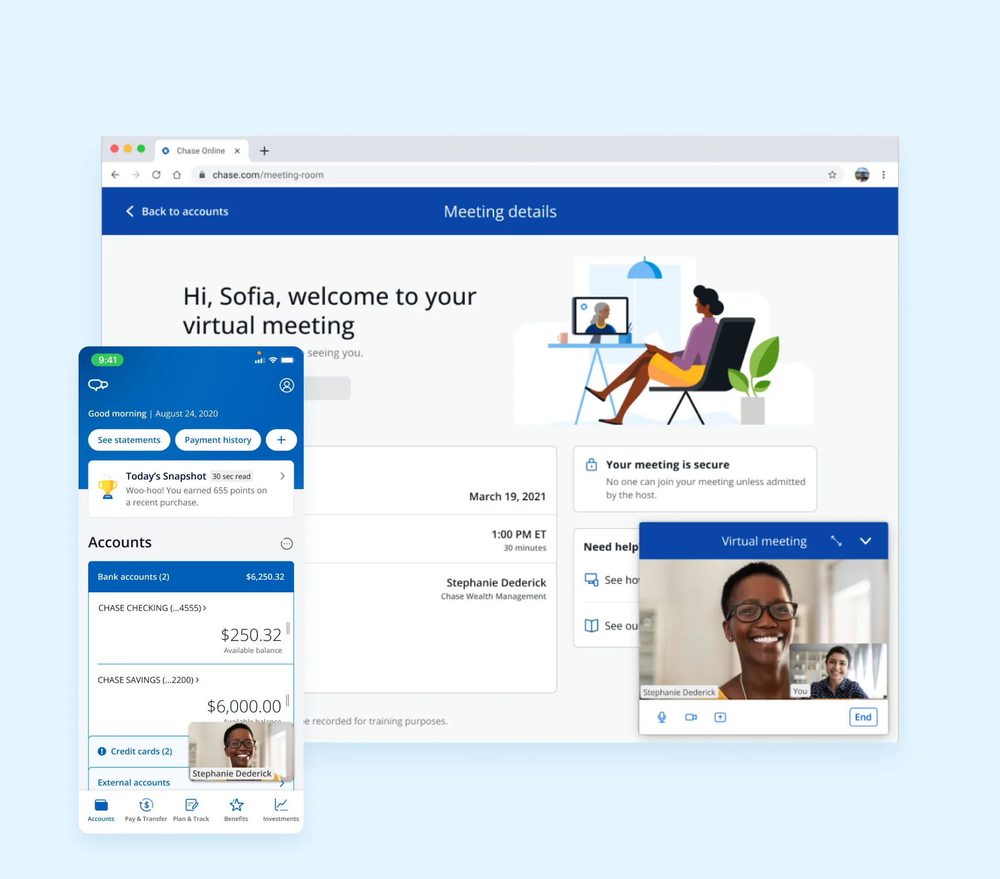
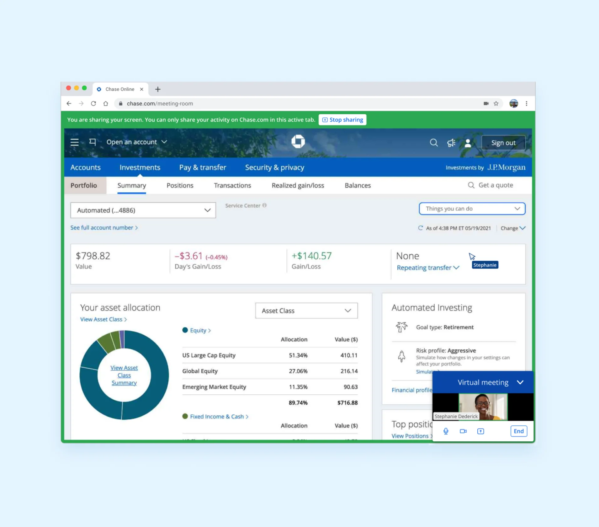
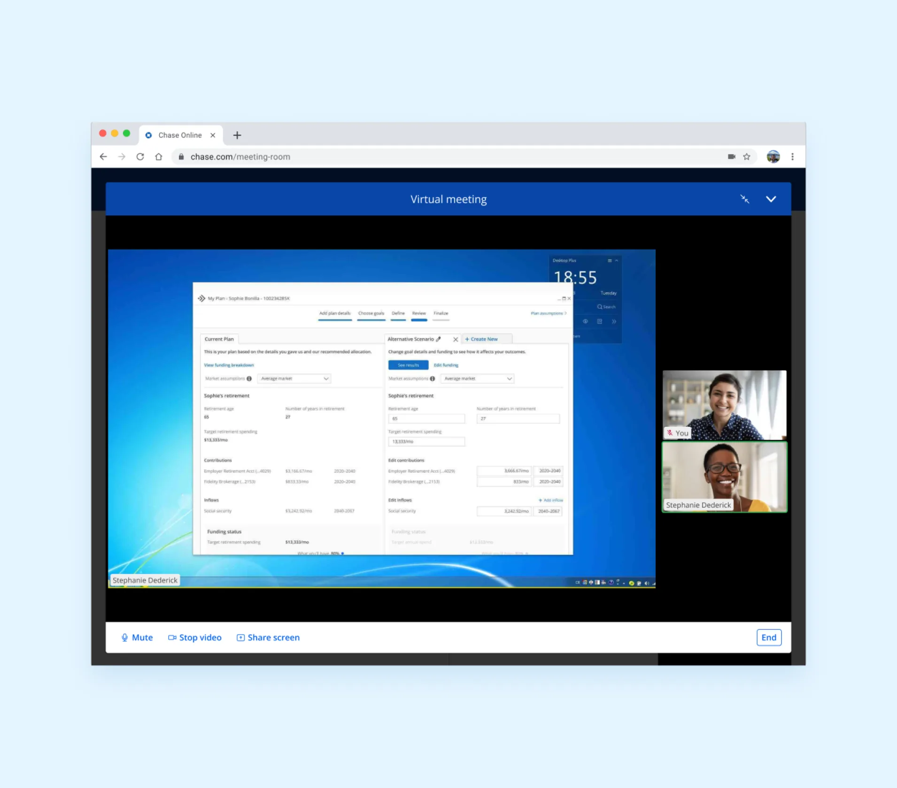
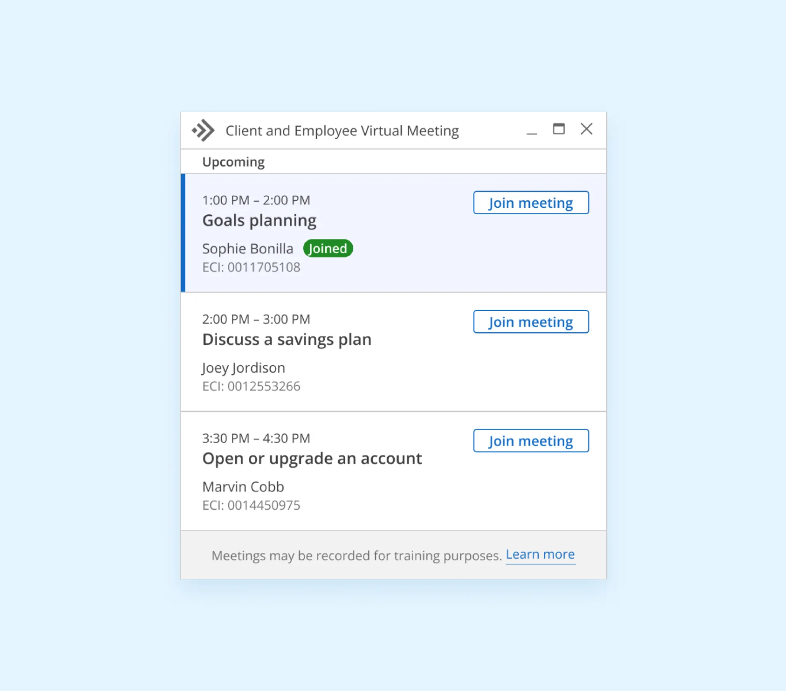

When Covid hit and Zoom's stock price skyrocketed 700%, virtual meetings stopped being a trend. Chase reacted swiftly, building its own secure virtual communications platform so clients could meet with advisors remotely — without leaving the Chase website or mobile app.
At the same time, Chase was launching J.P. Morgan Personal Advisors, a new investment offering where clients work with a team of advisors via video or phone, receive a personalized financial plan, and access expert-built portfolios. The video platform was foundational to making that product possible.
Team: 1 head of product, 1 lead PM, 1 head of technology, 1 UX researcher, 1 content strategist, and 2 development teams each with 1 PM and 3–4 engineers.
Build Chase's first-ever suite of collaboration tools — video, screen sharing, and co-browsing — all within the Chase website and mobile app. First built for Wealth Management, with a long-term roadmap to expand to Auto Financing, Home Lending, and Business Banking.
J.P. Morgan Wealth Management advisors enabled, overseeing $615B in assets under supervision.
Successful virtual meetings within 2.5 months of launch.
Average advisor rating from clients in the J.P. Morgan Personal Advisors pre-launch.
Licensed financial professionals serving clients through J.P. Morgan Personal Advisors at launch.
We used Zoom's Meeting SDK to host the meeting and Oracle's Cobrowse SDK for connected, secure screen sharing and co-browsing. The challenge was making two separate SDKs coexist seamlessly — starting as a proof-of-concept, then evolving into a full product with familiar video controls, dynamic resizing, multiple participants, and screen sharing.
The meeting window needed to handle collapsed, expanded, minimized, and maximized views — plus browser resizing — without breaking the experience. I designed resize controls alongside familiar meeting controls to accommodate docking, repositioning, and various screen sizes.

For a sighted user, it's obvious when you're sharing your screen. For a keyboard-only user, it isn't. I created a11y specs documenting how keyboard-only users could have the full experience — including dragging and repositioning the meeting window.






